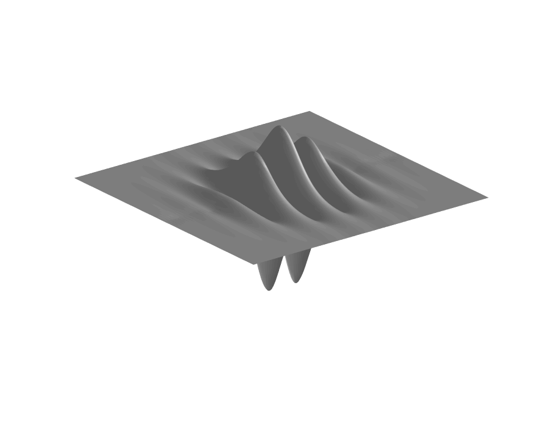
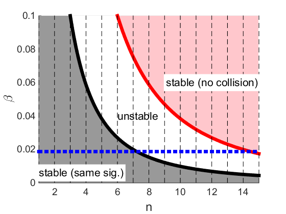

Research
My current projects include

Waves Under Ice
- Resonant behaviour of waves
- Experiments in a wave tank
- Stability of solutions
- Realistic models for ice
Stability of Hamiltonian Equations
- Stability for the Kawahara equation
- Generalised resonance conditions leading to instabilities
- Perturbations of eigenvalues of the stability problems
- Growth rates of instabilities
